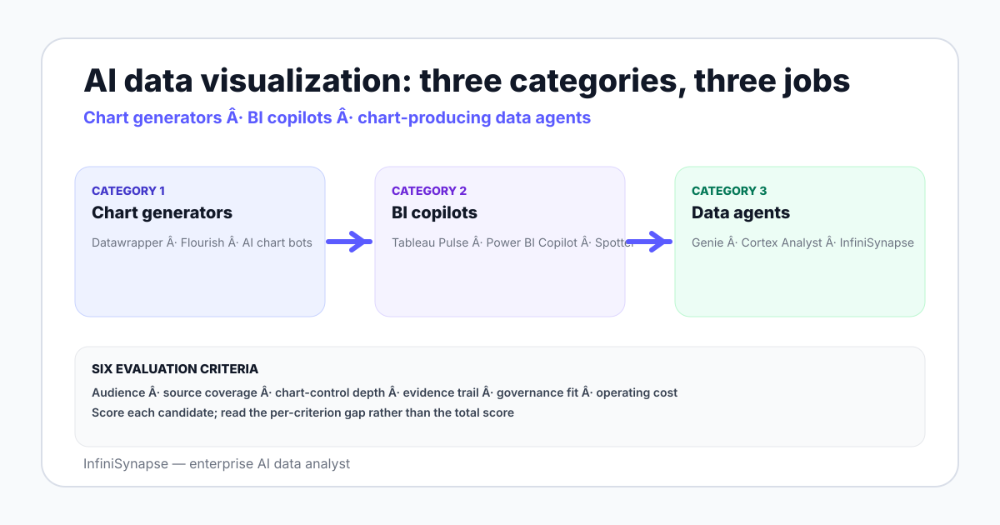

Best AI Data Visualization Tools in 2026: The Honest Landscape
The honest 2026 landscape of AI data visualization tools — chart generators, BI copilots, data agents — and how to pick by audience, source, and chart-control need.
AuthorInfiniSynapse Research, product and data architecture team
Published2026-06-28 · Last verified 2026-06-28 · Next review 2026-09-28
Evidence baseVendor documentation for Datawrapper, Flourish, Tableau Pulse, Power BI Copilot, ThoughtSpot Spotter, Databricks Genie, Snowflake Cortex Analyst, and InfiniSynapse; field testing in 2026; public benchmark studies.
Disclosure: This page is published by InfiniSynapse, which sells an AI data analyst that produces charts as part of its answers. The buyer guide names InfiniSynapse where it fits and other vendors where they fit — written so the rubric works regardless of which tool you pick.
TL;DR
AI data visualization tools split into three categories: chart generators (Datawrapper, Flourish, AI chart bots), BI copilots (Tableau Pulse, Power BI Copilot, ThoughtSpot Spotter), and data agents that produce charts as part of an analysis (Databricks Genie, Snowflake Cortex Analyst, InfiniSynapse).
Chart generators are best when the analyst already has the answer and needs a polished chart for a deck or article. Manual chart control is high.
BI copilots are best when a semantic model already exists and the audience is non-technical stakeholders who want conversational access to existing dashboards.
Data agents that produce charts are best when the question is open-ended, sources span beyond a single BI tool, and the chart is the side effect of an analytical answer.
Pick by audience first, then source coverage, then chart-control needs. Cost and procurement are tie-breakers, not primary criteria.
AI data visualization tools split into three categories — chart generators, BI copilots, and chart-producing data agents. Pick by audience first (technical analyst, business stakeholder, or non-analyst), then source coverage (single warehouse vs cross-source), then chart-control needs (manual styling vs auto-generated). Cost and procurement are tie-breakers, not primary criteria.

Three categories of AI data visualization tool in 2026
Category
Examples
Job to be done
Chart generators
Datawrapper, Flourish, AI chart bots
Polish a chart for a deck or article when you already have the data and the answer
BI copilots
Tableau Pulse, Power BI Copilot, ThoughtSpot Spotter
Add a conversational layer over an existing semantic model and pre-built dashboards
Answer an open-ended question with a plan, SQL, result, and chart returned together
The categories are not competitors — they overlap on the visualization output but serve different jobs. A team often runs more than one.
Honest picks by category for 2026
Chart generators
Datawrapper. Journalists, marketers, and one-off polished charts. Strong defaults, manual chart control, no analytical depth — you bring the data.
Flourish. Storytelling and interactive embeds, especially for racing bar charts and animated stories. Same shape as Datawrapper with more interactive flair.
AI chart bots (various). Conversational chart producers that take a CSV or natural-language description and emit a chart. Useful as a sketchpad; weak on analytical control.
BI copilots
Tableau Pulse. Tableau-resident teams that already have a semantic model. Strongest fit when the data already lives in Tableau and the audience is non-technical stakeholders.
Power BI Copilot. Microsoft-resident teams with a semantic model in Power BI. The conversational surface inherits Power BI's data connections.
ThoughtSpot Spotter. Search-driven BI with strong non-technical UX. Independent of Tableau and Power BI; a credible third lane.
Chart-producing data agents
Databricks Genie. Databricks-resident data, room-based curation. Produces charts as part of conversational answers.
Snowflake Cortex Analyst. Snowflake-resident data, semantic model-based grounding. Similar shape to Genie on a different warehouse.
InfiniSynapse. Cross-source agent with a deeper plan-execute-verify loop and a bound knowledge base — produces charts as part of the analytical answer.
How to evaluate — six criteria
Audience. Technical analyst, business stakeholder, or non-analyst executive — each prefers a different surface.
Source coverage. Single warehouse, multiple warehouses, files, or all of the above.
Chart-control depth. Manual styling for publication vs auto-generated for fast iteration.
Evidence trail. Does the tool show the SQL, the data, and a verification step the audience can defend?
Governance fit. Read-only role, scoped grants, audit log, and alignment with NIST AI RMF or ISO/IEC 42001.
Operating cost. Per-seat, per-question, or per-warehouse-compute — and how that scales with usage.
Score each candidate on each criterion. The total score is less informative than the per-criterion gap — a tool that wins on audience but loses on source coverage is a fit for a specific audience, not for the team.
Match the tool to the audience
Audience
Best category
Why
Data analyst writing SQL daily
Chart-producing data agent
The chart is the side effect of a deeper analytical answer; the analyst wants SQL and plan transparency
Business stakeholder reading dashboards
BI copilot
The semantic model and pre-built dashboards are the contract; the copilot adds conversational reach
Marketer or journalist publishing a chart
Chart generator
Manual styling, polished defaults, single-purpose
Executive asking "what is happening"
BI copilot or chart-producing agent
Depends on whether the answer comes from a pre-modeled metric or open-ended exploration
Researcher exploring a one-off dataset
AI chart bot or data agent
Speed of first chart matters more than long-term governance
A 10-minute selection rubric
Who is the primary audience?
Does a semantic model already exist in a BI tool?
Are sources inside one warehouse or spread across many?
Is the visualization the final artifact or a side effect of an analysis?
Does the answer need an evidence trail an auditor can read?
Is the workflow recurring (dashboard) or ad-hoc (agent)?
What is the budget per seat per year?
Two or three "non-analyst, BI-resident, dashboard-shaped" answers → BI copilot. Two or three "analyst, cross-source, audit-needed, ad-hoc" answers → data agent. Two or three "single-chart polish for publication" answers → chart generator. Many teams end up with one in each category for different jobs.
The best AI data visualization tool depends on the audience asking the question — not on the chart you eventually publish.
Try a chart-producing data agent across your warehouse
Connect a warehouse read-only, seed a small business glossary, and ask one open-ended question. The agent returns the plan, the SQL, the result, the verification step — and a chart appropriate for the answer. See whether the chart-with-evidence pattern fits your team.
What are the best AI data visualization tools in 2026?
The honest 2026 landscape splits into three categories: chart generators like Datawrapper and Flourish for polished publication charts, BI copilots like Tableau Pulse and Power BI Copilot and ThoughtSpot Spotter for conversational access to existing semantic models, and chart-producing data agents like Databricks Genie, Snowflake Cortex Analyst, and InfiniSynapse for open-ended analytical answers that include a chart. No single tool wins for every audience.
What is the difference between a BI copilot and a data agent for visualization?
A BI copilot adds a conversational layer over a pre-existing semantic model and pre-built dashboards — it depends on the BI tool you already run. A data agent connects to the warehouse independently of any BI tool, reads a bound business glossary, plans the analysis, runs SQL, verifies the answer, and produces a chart as part of the response. The agent does not require a pre-existing semantic model in a specific BI vendor.
When should I use Datawrapper or Flourish?
Use chart generators like Datawrapper or Flourish when you already have the answer and the data and you need a polished chart for an article, deck, blog post, or social share. The strengths are manual chart control, polished defaults, and clean publication output. The tradeoff is that you bring the analytical work — these tools do not do source connection, agent reasoning, or verification of the underlying number.
Which AI visualization tool fits non-technical executives?
BI copilots fit best when a semantic model already exists in Tableau or Power BI — the conversational layer lets executives ask in plain English and receive a chart against an already-governed model. ThoughtSpot Spotter is a credible third option independent of the major BI vendors. Chart-producing data agents work too when the question outruns the pre-built dashboards.
How should I evaluate AI data visualization tools?
Six criteria: audience (technical analyst vs business stakeholder vs non-analyst executive), source coverage (single warehouse vs cross-source), chart-control depth (manual styling vs auto-generated), evidence trail (does the tool show SQL and a verification step), governance fit (read-only role, scoped grants, audit log alignment), and operating cost (per-seat, per-question, per-warehouse-compute). Score on each; read the per-criterion gaps rather than the total.
Can an AI data agent produce charts as part of its answer?
Yes. The modern pattern is plan-execute-verify with a chart as the output side effect of the analytical answer. The agent retrieves the bound business glossary, drafts SQL, runs it, runs a verification query, picks a chart type appropriate to the result shape, and returns the chart together with the SQL and the plan. InfiniSynapse, Databricks Genie, and Snowflake Cortex Analyst all share this shape with different curation styles.
What is the difference between AI chart generators and BI copilots?
AI chart generators take a CSV or a natural-language description and emit a chart — they are sketchpads, not analytical workspaces. BI copilots add a conversational surface over an existing BI tool with its semantic model and pre-built dashboards. The first category is fast for one-off charts; the second category is built for ongoing team analytics inside an existing BI investment.
Methodology and review notes
Last updated: 2026-06-28 · Next scheduled review: 2026-09-28
This buyer guide synthesizes vendor documentation for Datawrapper, Flourish, Tableau Pulse, Power BI Copilot, ThoughtSpot Spotter, Databricks Genie, Snowflake Cortex Analyst, and InfiniSynapse; hands-on testing of each category in 2026; field experience across teams that picked one or more options; and public benchmark studies. The category framework reflects observed practice rather than vendor positioning.
Conflict of interest: InfiniSynapse publishes this guide and sells an enterprise AI data analyst. To reduce bias, the page leads with the topic itself, treats InfiniSynapse as one option among many, and links to external sources for every numeric claim.
Update cadence: Reviewed every 90 days for accuracy and link health.